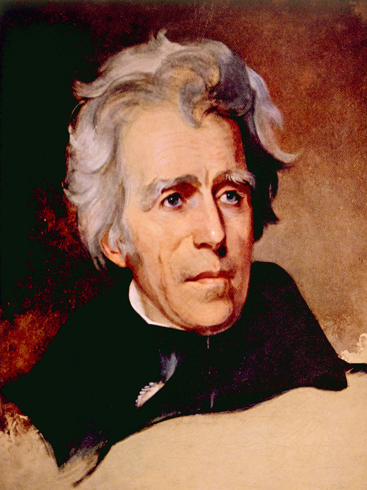

Historians refer to the years 1800–1860 as the Era of the Democrats. The first half of this time period (after the War of 1812) was known as the Era of Good Feelings because there was relatively little political strife during this period. Throughout this time, a coalition of western settlers, farmers, slaveholders, and debtors came together to give the Democratic-Republicans almost complete control of the government.
Unfortunately, the good feelings couldn’t go on forever. By the time of Andrew Jackson’s presidency (1829–1837), issues such as slavery and trade made such unity impossible. The Whig Party rose to oppose the Democrats until right before the Civil War.

An interesting note about this period is that Andrew Jackson’s presidency marks the start of the modern Democratic Party. At this point, it was no longer referred to as the Democratic-Republican Party. The Democratic Party of today is the longest running political party in the United States. The Era of the Democrats brought about much wider voter participation—among white males. It also coincided with an expansion of elected offices and a great expansion of the nation’s size.